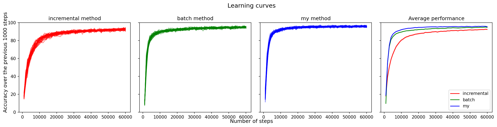

<!doctype html>
<html lang="en"><head>
    <title>A Simple Case of Supervised Online Learning</title>
    
    <!DOCTYPE html>
<html lang="en">
<head>
    <meta charset="UTF-8">
    <link rel="stylesheet" href="https://cdn.jsdelivr.net/npm/katex@0.16.4/dist/katex.min.css" integrity="sha384-vKruj+a13U8yHIkAyGgK1J3ArTLzrFGBbBc0tDp4ad/EyewESeXE/Iv67Aj8gKZ0" crossorigin="anonymous">

    
    <script defer src="https://cdn.jsdelivr.net/npm/katex@0.16.4/dist/katex.min.js" integrity="sha384-PwRUT/YqbnEjkZO0zZxNqcxACrXe+j766U2amXcgMg5457rve2Y7I6ZJSm2A0mS4" crossorigin="anonymous"></script>

    
    <script defer src="https://cdn.jsdelivr.net/npm/katex@0.16.4/dist/contrib/auto-render.min.js" integrity="sha384-+VBxd3r6XgURycqtZ117nYw44OOcIax56Z4dCRWbxyPt0Koah1uHoK0o4+/RRE05" crossorigin="anonymous"
        onload="renderMathInElement(document.body);"></script>

    <script>
        document.addEventListener("DOMContentLoaded", function() {
            renderMathInElement(document.body, {
                delimiters: [
                    {left: "$$", right: "$$", display: true},
                    {left: "$", right: "$", display: false}
                ]
            });
        });
        </script>
</head>
<body>
</body>
</html>
    
    <meta charset="utf-8">
    <meta name="viewport" content="width=device-width, initial-scale=1, shrink-to-fit=no">
    <meta name="description" content="" />
    <script defer data-domain="plopd.github.io" src="https://plausible.io/js/script.js"></script>

    
    
    
    <link rel="stylesheet" href="../../../css/theme.min.css">

    
    
    
    
    <link rel="stylesheet" href="../../../css/custom.min.css">
    

    
</head>
<body>
        <div id="content" class="mx-auto"><header class="container mt-sm-5 mt-4 mb-4 mt-xs-1">
    <div class="row">
        
        <div class="col-sm-8 col-12 text-sm-left text-center">
            
            
            <ul id="nav-links" class="list-inline mb-2">
                
                
                    <li class="list-inline-item">
                        <a class="badge badge-white " href="../../../" title="About">About</a>
                    </li>
                
                    <li class="list-inline-item">
                        <a class="badge badge-white " href="../../../post/" title="Blog">Blog</a>
                    </li>
                
                    <li class="list-inline-item">
                        <a class="badge badge-white " href="../../../booklist/readlist/" title="Reading List">Reading List</a>
                    </li>
                
            </ul>
            <ul id="nav-social" class="list-inline">
                
            </ul>
        </div>
    </div>
    <hr />
</header>
<div class="container">

<!DOCTYPE html>
<html lang="en">
<head>
    <meta charset="UTF-8">
    <link rel="stylesheet" href="https://cdn.jsdelivr.net/npm/katex@0.16.4/dist/katex.min.css" integrity="sha384-vKruj+a13U8yHIkAyGgK1J3ArTLzrFGBbBc0tDp4ad/EyewESeXE/Iv67Aj8gKZ0" crossorigin="anonymous">

    
    <script defer src="https://cdn.jsdelivr.net/npm/katex@0.16.4/dist/katex.min.js" integrity="sha384-PwRUT/YqbnEjkZO0zZxNqcxACrXe+j766U2amXcgMg5457rve2Y7I6ZJSm2A0mS4" crossorigin="anonymous"></script>

    
    <script defer src="https://cdn.jsdelivr.net/npm/katex@0.16.4/dist/contrib/auto-render.min.js" integrity="sha384-+VBxd3r6XgURycqtZ117nYw44OOcIax56Z4dCRWbxyPt0Koah1uHoK0o4+/RRE05" crossorigin="anonymous"
        onload="renderMathInElement(document.body);"></script>

    <script>
        document.addEventListener("DOMContentLoaded", function() {
            renderMathInElement(document.body, {
                delimiters: [
                    {left: "$$", right: "$$", display: true},
                    {left: "$", right: "$", display: false}
                ]
            });
        });
        </script>
</head>
<body>
</body>
</html>

    <div class="pl-sm-2">
        <div class="mb-3">
            <h3 class="mb-0">A Simple Case of Supervised Online Learning</h3>
            
            <small class="text-muted">Published January 15, 2023</small>
        </div>

        <article>
            <p>In this paper, we consider the supervised version of online learning. Specifically, we try to predict the label of handwritten digits, from the MNIST dataset, in images in an online fashion. The samples arrive one by one, and the training is performed immediately afterwards.</p>
<p>We evaluate three online methods, namely</p>
<ul>
<li><strong>Incremental</strong>: the learner performs a single learning update at <em>each</em> time step in a <em>fully incremental</em> manner, with no samples stored.</li>
<li><strong>Mini-Batch</strong>: the learner performs a learning update by considering samples from a mini-batch.</li>
<li><strong>Full-Batch (idealistic)</strong>: the learner keeps a <em>running</em> buffer of samples encountered so far and performs learning updates based on all samples accumulated so far. Thus, the learner will eventually have accumulated all the samples it has been given.</li>
</ul>
<p></p>
<p>*Figure 1: The Incremental algorithm is the slowest and least accurate, and the Full-Batch algorithm dominates both the Incremental and Mini-Batch algorithms in accuracy and speed. All experiments were performed for 30 independent runs with seeds from 1 to 30. For the average performance (right panel), the standard error $\times 2.5$ is plotted on both sides of the mean.</p>
<p>In the experiment, each algorithm was initialized with a particular weight vector and then run for 60,000 steps. The whole thing was then repeated for 30 runs. The random seed was initialized to the same value for all three algorithms at the beginning of each group of 30 runs. For each run, the accuracy over the last 1000 steps was recorded and averaged over the runs to generate the learning curves shown in Figure 1. The variance in the learning curves of each algorithm comes from the initial weight vector and the order of presentation of the samples.</p>
<p>We can see that the idealistic algorithm, which uses all samples up to the current timestep to perform a learning update, dominates both the incremental and mini-batch algorithm in terms of accuracy and speed. Furthermore, the worst performing algorithm is the incremental learner, which only looks at the current example and makes an update based on it. One thing that makes this algorithm special from the others is that it tries to squeeze the most out of the example presented at the current timestep, rather than storing past examples and reusing them later.</p>
<p>An important dilemma that is not often explicitly discussed is</p>
<blockquote>
<p>the tradeoff between paying as much attention as possible to the current timestep versus differing some learning from the current example and instead storing it for later reuse.</p>
</blockquote>
<p>Perhaps we should call it the <em>Attention</em><sup id="fnref:1"><a href="#fn:1" class="footnote-ref" role="doc-noteref">1</a></sup> dilemma, since at each timestep the learner has to decide how much attention to pay to the current example or to store it for later reuse, thereby paying less attention to it <em>now</em>.</p>
<div class="footnotes" role="doc-endnotes">
<hr>
<ol>
<li id="fn:1">
<p>Not to be confused with the attention mechanism implemented in Transformer neural networks.&#160;<a href="#fnref:1" class="footnote-backref" role="doc-backlink">&#x21a9;&#xfe0e;</a></p>
</li>
</ol>
</div>

        </article>
    </div>

            </div>
        </div><footer class="text-center pb-1">
    <small class="text-muted">
        
        <br>
        Powered by <a href="https://gohugo.io/" target="_blank">Hugo</a>
        and <a href="https://github.com/austingebauer/devise" target="_blank">Devise</a>
        theme from <a href="https://github.com/austingebauer/devise" target="_blank">A. Gebauer.</a>
    </small>
</footer>
</body>
</html>
